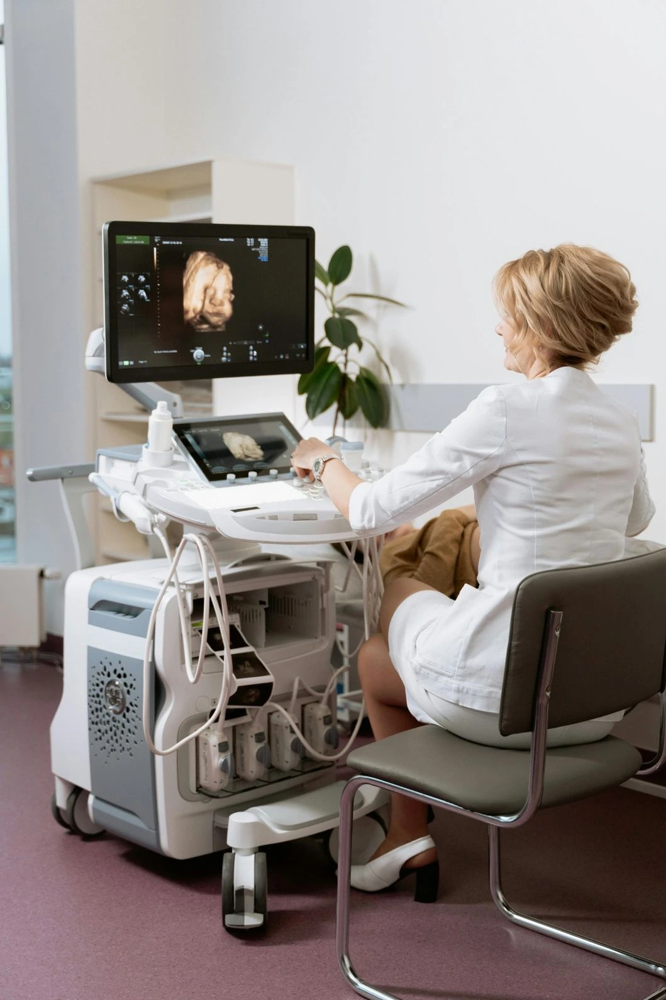

Every expectant mother wants to know that her baby is safe, growing well, and receiving everything it needs through the placenta. The fetal Doppler scan during pregnancy is the most precise clinical tool available to assess exactly that — measuring blood flow through the umbilical cord, placenta, fetal brain, and heart in real time, providing your obstetrician with information that no other investigation can replicate. This guide explains what a fetal Doppler scan during pregnancy involves, what color Doppler ultrasound for baby heart reveals, how umbilical artery Doppler ultrasound detects fetal compromise, whether Doppler scan is safe for baby, and how to compare Doppler scan cost in Madurai across providers. As the best pregnancy scan centre in Madurai, Meera 4D Scans provides complete blood flow monitoring in pregnancy with same-day results and experienced specialist reporting. Contact us today for current Doppler scan cost in Madurai and appointment availability.
What is a Fetal Doppler Scan During Pregnancy?
A fetal Doppler scan during pregnancy is a specialised form of ultrasound that uses the Doppler effect — the change in frequency of sound waves reflected by moving objects — to measure the speed, direction, and resistance of blood flowing through specific vessels in the fetoplacental unit. Unlike standard greyscale (B-mode) ultrasound, which produces still or moving images of anatomy, Doppler ultrasound generates waveforms and colour maps that directly represent circulation, giving your obstetrician a dynamic picture of how blood is moving through the baby's body and placenta at any given moment.
At Meera 4D Scans — the best pregnancy scan centre in Madurai — every fetal Doppler scan during pregnancy is performed by experienced sonographers using advanced colour Doppler equipment, with same-day interpretation and reporting by specialist obstetricians and radiologists. Our transparent Doppler scan cost in Madurai is all-inclusive with no hidden charges. Contact our team to confirm current pricing and availability.
Types of Doppler Ultrasound Used in Pregnancy
- Color Doppler maps blood flow direction across the entire image frame using colour coding — conventionally red for flow towards the ultrasound probe and blue for flow away from it. Essential for color Doppler ultrasound for baby heart and placental vessel assessment
- Pulsed Wave (PW) Doppler samples blood flow velocity at a specific point within a vessel and generates a waveform over time. Used for quantitative analysis of umbilical artery Doppler ultrasound, middle cerebral artery, and ductus venosus assessment
- Power Doppler detects very low-velocity blood flow with high sensitivity regardless of direction. Useful for visualising placental perfusion and small vessel flow in blood flow monitoring in pregnancy
- Spectral Doppler displays velocity over time as a waveform. Indices including the Systolic/Diastolic (S/D) ratio, Resistance Index (RI), and Pulsatility Index (PI) are calculated from the waveform and compared against gestational age-specific reference ranges
When is a Fetal Doppler Scan During Pregnancy Indicated?
Blood flow monitoring in pregnancy via Doppler ultrasound is not a routine scan performed at every antenatal visit. It is a targeted investigation recommended by your obstetrician when specific clinical risk factors are present. Understanding when a fetal Doppler scan during pregnancy is indicated helps expectant mothers appreciate both the purpose of the investigation and why their doctor has requested it.
Clinical Indications for Fetal Doppler Scan During Pregnancy
- Fetal Growth Restriction (FGR) when the baby is measuring small for gestational age on biometry, umbilical artery Doppler ultrasound is essential to determine whether growth restriction is constitutional or placental in origin. Abnormal umbilical artery waveforms confirm impaired placental blood supply and guide the timing of delivery
- Pre-eclampsia and pregnancy-induced hypertension elevated maternal blood pressure in pregnancy is frequently associated with abnormal placental blood flow. Blood flow monitoring in pregnancy via uterine artery and umbilical artery Doppler guides management and identifies babies at risk of acute compromise
- Reduced fetal movements a mother's report of reduced or absent fetal movements warrants urgent fetal Doppler scan during pregnancy to assess placental function and fetal wellbeing alongside a non-stress cardiotocography (CTG) trace
- Multiple pregnancy (twins, triplets) twin-to-twin transfusion syndrome (TTTS) in monochorionic twin pregnancies requires serial blood flow monitoring in pregnancy with colour Doppler from the second trimester to detect early signs of discordant placental sharing
- Gestational diabetes pregnancies complicated by poorly controlled gestational diabetes can develop macrosomia and placental insufficiency. Fetal Doppler scan during pregnancy monitors uteroplacental and fetoplacental circulation in these cases
- Fetal anaemia middle cerebral artery (MCA) peak systolic velocity measured by fetal Doppler scan during pregnancy is the most accurate non-invasive method for detecting fetal anaemia in Rh-sensitised pregnancies and cases of parvovirus B19 infection
- Suspected fetal cardiac abnormality color Doppler ultrasound for baby heart is an essential component of fetal echocardiography for structural heart defect assessment, valve function evaluation, and haemodynamic characterisation
- Post-term pregnancy pregnancies continuing beyond 40–42 weeks require surveillance including umbilical artery Doppler ultrasound to detect signs of placental ageing and fetal compromise
Umbilical Artery Doppler Ultrasound The Most Important Vessel in Fetal Surveillance
The umbilical artery Doppler ultrasound is the single most clinically significant Doppler measurement in obstetric practice. The umbilical artery carries deoxygenated blood and metabolic waste products from the fetus back to the placenta for exchange. The pattern of blood flow in this vessel directly reflects the resistance within the placental vascular bed — the higher the placental resistance, the more abnormal the waveform pattern, and the greater the risk to the fetus.
Umbilical Artery Doppler Waveform Categories and Clinical Significance
| Waveform Finding | Clinical Meaning | Obstetric Action |
|---|---|---|
| Normal end-diastolic flow | Placental resistance is within the normal range; adequate blood flow reaching the baby | Routine surveillance; repeat as per protocol |
| Elevated resistance (high PI/RI) | Increased placental resistance; early sign of uteroplacental insufficiency | Increased monitoring frequency; corticosteroids if preterm |
| Absent end-diastolic flow (AEDF) | Severely elevated placental resistance; significant fetal compromise | Hospital admission; daily CTG; consider delivery depending on gestation |
| Reversed end-diastolic flow (REDF) | Critical placental failure; blood flowing backwards during diastole; immediate fetal risk | Emergency obstetric assessment; delivery usually indicated |
The progression from normal to elevated resistance to absent to reversed end-diastolic flow represents a clinical deterioration continuum. Serial umbilical artery Doppler ultrasound at the best pregnancy scan centre in Madurai allows your obstetrician to track where along this continuum your pregnancy sits and to intervene at the optimal clinical moment — before acute fetal compromise develops. This is why blood flow monitoring in pregnancy via repeated Doppler assessment is so clinically valuable in high-risk cases.
At Meera 4D Scans, umbilical artery Doppler ultrasound is reported with full waveform analysis, Pulsatility Index, Resistance Index, S/D ratio, and comparison against gestational age-specific reference ranges — providing your obstetrician with a complete, actionable blood flow monitoring in pregnancy report on the same day as the examination.

Color Doppler Ultrasound for Baby Heart Fetal Cardiac Assessment
Color Doppler ultrasound for baby heart is an integral component of the detailed fetal anomaly scan and fetal echocardiography. While standard greyscale ultrasound visualises the structural anatomy of the fetal heart — chamber size, septal integrity, and vessel origins — color Doppler ultrasound for baby heart adds a functional dimension, showing how blood is actually moving through those structures in real time.
Key Color Doppler Views in Fetal Cardiac Assessment
| Doppler View | What It Assesses | Conditions Detected |
|---|---|---|
| Four-chamber colour flow | Flow across mitral and tricuspid valves; atrial and ventricular septal integrity | ASD, VSD, AV canal defects, valve regurgitation |
| Left ventricular outflow tract (LVOT) | Flow from left ventricle through the aortic valve into the aorta | Aortic stenosis, LVOTO, subaortic obstruction |
| Right ventricular outflow tract (RVOT) | Flow from right ventricle through the pulmonary valve | Pulmonary stenosis, Tetralogy of Fallot, pulmonary atresia |
| Three-vessel trachea (3VT) view | Alignment and flow in pulmonary artery, aorta, and superior vena cava | Transposition of great arteries, coarctation of the aorta, vascular rings |
| Ductus arteriosus | Flow through the fetal shunt connecting pulmonary artery to aorta | Premature ductal constriction, haemodynamic significance |
Color Doppler ultrasound for baby heart at Meera 4D Scans is performed as part of fetal echocardiography or the detailed anomaly scan when cardiac assessment is indicated. All color Doppler ultrasound for baby heart examinations are reported by specialists with experience in fetal cardiac imaging, with results ready the same day.
Other Vessels Assessed in Blood Flow Monitoring in Pregnancy
A complete fetal Doppler scan during pregnancy assesses multiple vessels beyond the umbilical artery, each providing a different window into fetal wellbeing and placental function. The combination of findings across vessels guides the overall clinical picture for blood flow monitoring in pregnancy.
Complete Vessel Assessment in Fetal Doppler Scan During Pregnancy
- Middle Cerebral Artery (MCA) the most clinically significant cerebral vessel in blood flow monitoring in pregnancy. Normally, the fetal brain has high vascular resistance. When the fetus is compromised and oxygen delivery falls, cerebral vessels dilate to preserve brain blood supply — a response called cerebral redistribution or the "brain-sparing effect," identified by a fall in MCA resistance indices. MCA peak systolic velocity (PSV) is also the standard for non-invasive fetal anaemia detection
- Cerebroplacental Ratio (CPR) the ratio of MCA Pulsatility Index to umbilical artery Pulsatility Index. A falling CPR below 1.0 indicates that the fetal brain is beginning to prioritise its own blood supply at the expense of peripheral circulation — a sensitive early marker of fetal compromise used in fetal Doppler scan during pregnancy for growth-restricted fetuses
- Uterine Arteries assessment of the maternal uterine arteries in the second trimester evaluates whether placental implantation has occurred normally. High uterine artery resistance with notching at 20–24 weeks is associated with increased risk of pre-eclampsia, placental abruption, and fetal growth restriction — identifying pregnancies that require enhanced blood flow monitoring in pregnancy
- Ductus Venosus (DV) the ductus venosus carries oxygenated blood from the placenta directly to the fetal heart. Abnormal ductus venosus waveforms — particularly absent or reversed flow during atrial contraction — are a late marker of severe fetal compromise and impending cardiac decompensation in the fetal Doppler scan during pregnancy
- Umbilical Vein normally, umbilical venous flow is continuous and non-pulsatile. Pulsatile umbilical venous flow in a growth-restricted fetus is a sign of severely elevated cardiac afterload and a critical finding in umbilical artery Doppler ultrasound assessment
Is Doppler Scan Safe for Baby? Understanding the Evidence
This is one of the most common questions expectant mothers ask when a fetal Doppler scan during pregnancy is recommended. The answer, supported by decades of clinical research, is clear: Doppler scan is safe for baby when performed by a trained sonographer using diagnostic-grade equipment in a clinically indicated context.
Why Doppler Scan Is Safe for Baby: The Clinical Evidence
- No ionising radiation obstetric Doppler ultrasound uses sound waves, not X-rays or ionising radiation. There is no cumulative radiation dose associated with fetal Doppler scan during pregnancy, however frequently it is performed
- Decades of clinical validation Doppler ultrasound has been used in obstetrics since the 1980s. Large-scale follow-up studies of children exposed to obstetric Doppler in utero have demonstrated no adverse developmental outcomes. All major international obstetric guidelines — WHO, ISUOG, RCOG — confirm that Doppler scan is safe for baby
- ALARA principle applied all ultrasound, including Doppler, is performed according to the ALARA principle — As Low As Reasonably Achievable. At Meera 4D Scans, the best pregnancy scan centre in Madurai, all Doppler examinations are conducted with the minimum output power and duration required to obtain clinically adequate waveforms
- Thermal and mechanical indices monitored modern diagnostic ultrasound machines display Thermal Index (TI) and Mechanical Index (MI) values continuously. Our sonographers maintain both indices within safe recommended ranges throughout every fetal Doppler scan during pregnancy
- Clinical benefit outweighs theoretical risk for pregnancies where blood flow monitoring in pregnancy is indicated, the clinical benefit of detecting fetal compromise early far outweighs any theoretical risk from the examination. The greater risk, in high-risk pregnancies, is not performing the scan
Is Doppler scan safe for baby? The established clinical consensus from WHO, ISUOG, and RCOG is unequivocal: yes. When recommended by your obstetrician and performed at a qualified best pregnancy scan centre in Madurai like Meera 4D Scans, fetal Doppler scan during pregnancy is a safe, non-invasive, and clinically essential tool for protecting fetal wellbeing.
Doppler Scan Cost in Madurai What Is Included at Meera 4D Scans
The Doppler scan cost in Madurai at Meera 4D Scans is transparently structured. The quoted price covers all of the following with no additional charges:
Doppler Scan Cost All-Inclusive at Meera 4D Scans
- Complete Doppler examination assessment of all clinically indicated vessels — umbilical artery, middle cerebral artery, ductus venosus, uterine arteries, and umbilical vein — as per your obstetrician's referral and clinical indication
- Color Doppler imaging full color Doppler ultrasound for baby heart and fetoplacental vessel colour mapping included where clinically indicated, within the same Doppler scan cost in Madurai
- Quantitative waveform analysis Pulsatility Index, Resistance Index, and S/D ratio calculated and reported for each vessel assessed with comparison to gestational age-specific reference ranges
- Detailed structured specialist report prepared by experienced specialists with clinical correlation and recommendations for obstetric management. Delivered the same day as the examination
- Digital scan images and waveforms provided alongside the written report for your obstetrician
- No hidden charges the Doppler scan cost in Madurai quoted at booking is the total payable. No separate report fee, film charge, or registration surcharge
Doppler Scan Cost in Madurai What Drives Price Variation
| Cost Factor | Impact on Doppler Scan Cost in Madurai |
|---|---|
| Equipment quality | Advanced colour Doppler machines with high-sensitivity flow detection cost more than entry-level systems but produce significantly more reliable blood flow monitoring in pregnancy results |
| Vessels assessed | A single-vessel assessment costs less than a complete multi-vessel fetal Doppler scan during pregnancy covering umbilical artery, MCA, ductus venosus, and uterine arteries. Confirm which vessels are included in the quoted Doppler scan cost in Madurai |
| Reporting expertise | In-house specialist reporting at the best pregnancy scan centre in Madurai provides more clinically actionable results than outsourced remote reporting and is reflected in the Doppler scan cost in Madurai |
| Hospital vs standalone centre | Hospital Doppler scan cost in Madurai includes facility and administrative overhead. Standalone diagnostic centres like Meera 4D Scans offer equivalent clinical quality at a more competitive price |
| Combined with biophysical profile | A fetal Doppler scan during pregnancy combined with biophysical profile (BPP) scoring costs more than Doppler alone but provides a more complete fetal wellbeing assessment. Confirm whether BPP is included in the quoted Doppler scan cost in Madurai |
To confirm the all-inclusive Doppler scan cost in Madurai at Meera 4D Scans, contact our team directly. Our staff will confirm exactly which vessels are assessed, what is included in the report, and the total Doppler scan cost in Madurai with no hidden additions.
Choosing the Best Pregnancy Scan Centre in Madurai for Doppler Ultrasound
When selecting the best pregnancy scan centre in Madurai for your fetal Doppler scan during pregnancy, the following criteria determine whether you receive a clinically reliable result:
How to Evaluate a Pregnancy Scan Centre for Doppler Ultrasound
Confirm Advanced Colour Doppler Equipment
Not all ultrasound machines offer diagnostic-grade colour Doppler sensitivity for fetal vascular assessment. Ask whether the centre uses dedicated obstetric ultrasound systems with colour, power, and spectral Doppler capability. For reliable blood flow monitoring in pregnancy, equipment quality is non-negotiable.
Confirm Multi-Vessel Assessment
A complete fetal Doppler scan during pregnancy covers multiple vessels — umbilical artery, MCA, and additional vessels as clinically indicated. Confirm that the quoted Doppler scan cost in Madurai includes all vessels relevant to your referral, not a single-vessel assessment.
Confirm Specialist In-House Reporting
The clinical value of umbilical artery Doppler ultrasound depends entirely on accurate waveform interpretation by a qualified specialist. Confirm that the report is prepared by a qualified obstetrician or radiologist on-site, same-day — not outsourced to a remote reporting service the following day.
Verify Safety Protocols
Confirm that sonographers at the centre follow ALARA principles and monitor thermal and mechanical indices during the fetal Doppler scan during pregnancy. Any qualified best pregnancy scan centre in Madurai should be able to explain how they ensure Doppler scan is safe for baby in their practice.
Confirm All-Inclusive Doppler Scan Cost
The Doppler scan cost in Madurai should include the examination, all vessel assessments, the detailed specialist report, and digital waveform images — with no separate report fee or surcharge. Only compare all-inclusive Doppler scan cost in Madurai figures across centres; headline prices excluding the report are not comparable.
Preparation for Your Fetal Doppler Scan During Pregnancy at Meera 4D Scans
Once you book your fetal Doppler scan during pregnancy at Meera 4D Scans, the following preparation applies:
- No fasting required eat and drink normally before your fetal Doppler scan during pregnancy appointment. Normal blood glucose levels support optimal fetal movement and blood flow patterns during the examination
- Bladder preparation a moderately full bladder is helpful for transabdominal Doppler scans in early to mid-pregnancy. In the third trimester, bladder fullness is usually not required. Our team will advise specifically at booking based on your gestation
- Bring all previous reports your previous scan reports, referral letter from your obstetrician, and any blood results help our specialists apply the most appropriate blood flow monitoring in pregnancy protocol and provide a contextual, comparative report
- Wear comfortable clothing loose, two-piece clothing allows easy access to the abdomen for transabdominal Doppler imaging
- Duration a standard fetal Doppler scan during pregnancy covering umbilical artery, MCA, and ductus venosus takes approximately 20–30 minutes. Combined with biophysical profile or detailed growth assessment, allow 40–60 minutes. Color Doppler ultrasound for baby heart as part of fetal echocardiography may take 45–60 minutes
- Same-day results the detailed Doppler report is prepared and delivered on the same day as the scan. Your obstetrician will receive the report directly to guide clinical management
Why Meera 4D Scans is the Best Pregnancy Scan Centre in Madurai for Doppler Ultrasound
Meera 4D Scans is established as the best pregnancy scan centre in Madurai for fetal Doppler scan during pregnancy and comprehensive obstetric imaging. Key differentiators include:
- Advanced colour Doppler equipment dedicated obstetric ultrasound systems with high-sensitivity colour, power, and spectral Doppler for complete blood flow monitoring in pregnancy across all fetoplacental vessels
- Complete umbilical artery Doppler ultrasound with quantitative waveform analysis, PI, RI, and S/D ratio reported against gestational age-specific reference ranges for every examination
- Color Doppler ultrasound for baby heart as part of fetal echocardiography with experienced cardiac imaging specialists on-site
- Confirmed Doppler scan safety all examinations conducted under ALARA principles with continuous TI and MI monitoring. Doppler scan is safe for baby at Meera 4D Scans because our protocols are designed around clinical safety standards
- Transparent Doppler scan cost in Madurai all-inclusive pricing covering the complete examination, detailed specialist report, and digital waveform images — no hidden charges
- Same-day detailed specialist reports every fetal Doppler scan during pregnancy reported and delivered the same day for prompt obstetric decision-making
- Trusted by 10,000+ patients in Madurai for pregnancy scans, neurology, cardiology, and women's health diagnostics
For the current Doppler scan cost in Madurai, to confirm availability of fetal Doppler scan during pregnancy or color Doppler ultrasound for baby heart, or to book your appointment, contact Meera 4D Scans today or call +91-9042883031. Same-day appointments are available subject to schedule.
Useful Resources
Clinical and patient-facing references for fetal Doppler ultrasound, blood flow monitoring in pregnancy, and obstetric imaging standards.
-
ISUOG Practice Guidelines: Doppler Ultrasonography in ObstetricsInternational Society of Ultrasound in Obstetrics and Gynaecology clinical guidelines on the use of Doppler ultrasound for fetal surveillance, umbilical artery assessment, and high-risk pregnancy monitoring.
-
NCBI Doppler Ultrasound in ObstetricsPeer-reviewed reference covering Doppler physics, vessel assessment protocols, waveform interpretation, and clinical applications in fetal surveillance.
-
WHO Maternal Health and Antenatal CareWorld Health Organization guidelines on antenatal care, fetal surveillance, and the role of ultrasound including Doppler in pregnancy monitoring.
-
Practo Pregnancy Scan Centres in MaduraiCompare pregnancy scan centres and Doppler scan cost in Madurai with patient reviews and online appointment booking.
-
National Health Portal India Diagnostic ImagingOfficial Indian government patient guidance on ultrasound, Doppler scanning in pregnancy, and diagnostic test standards.